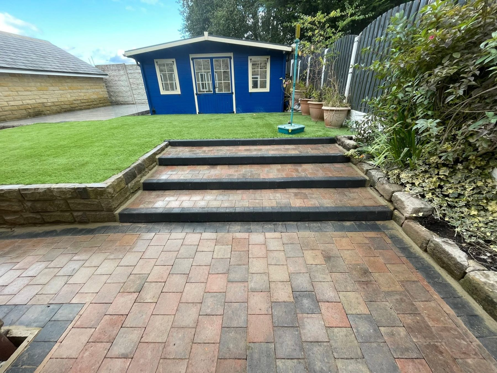
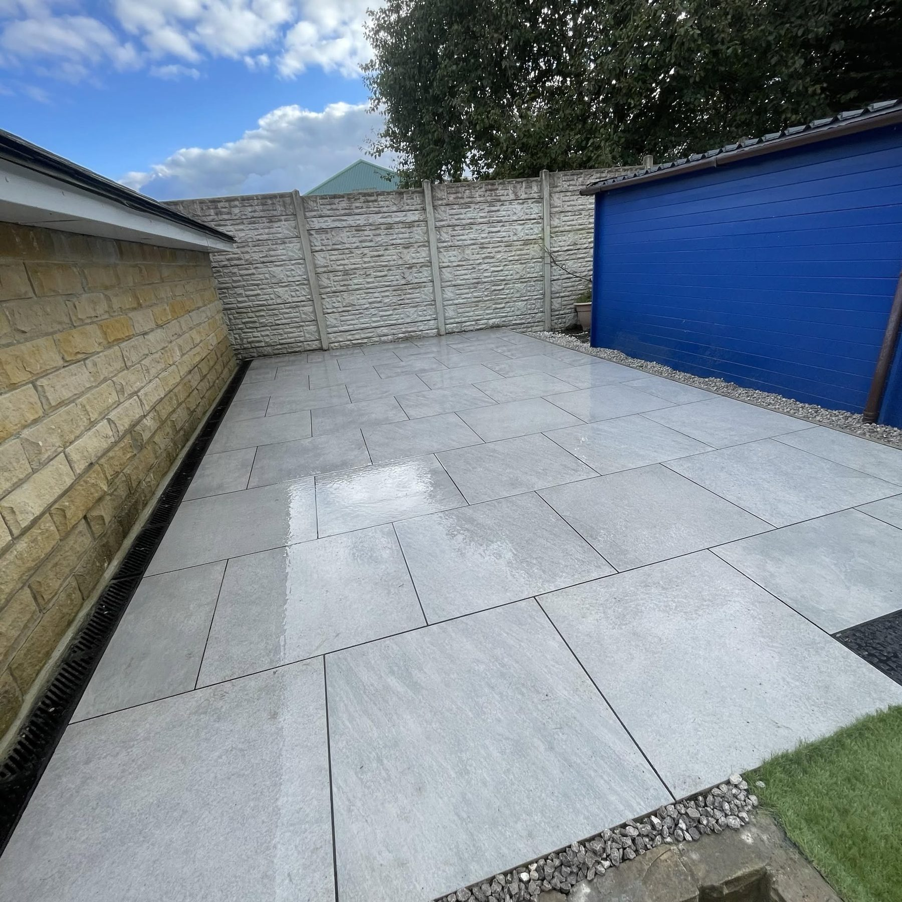
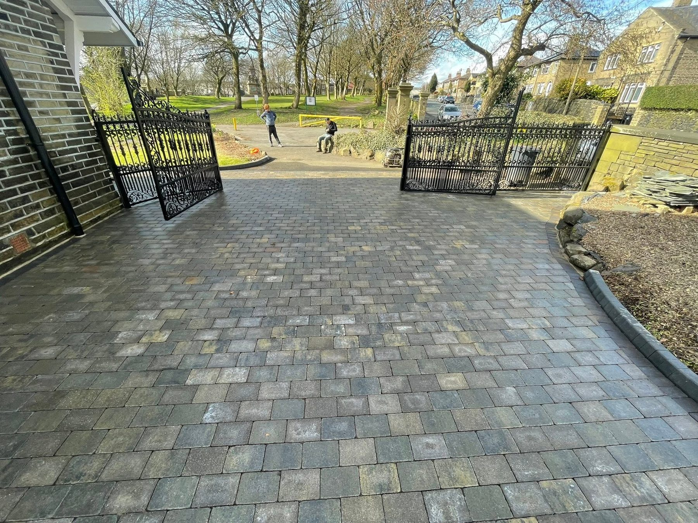
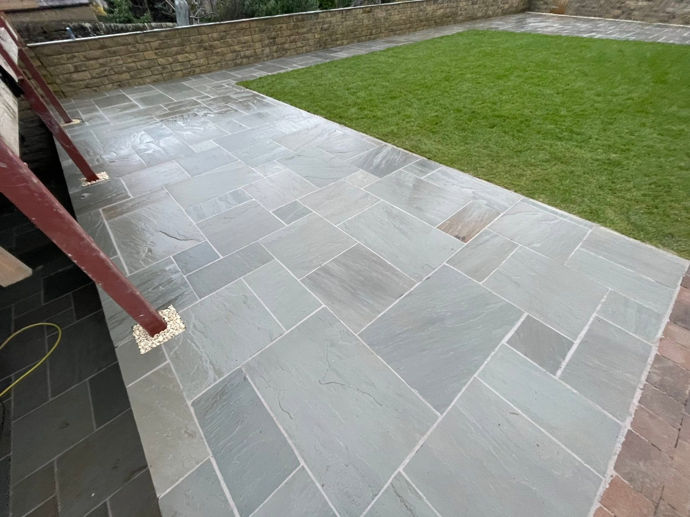
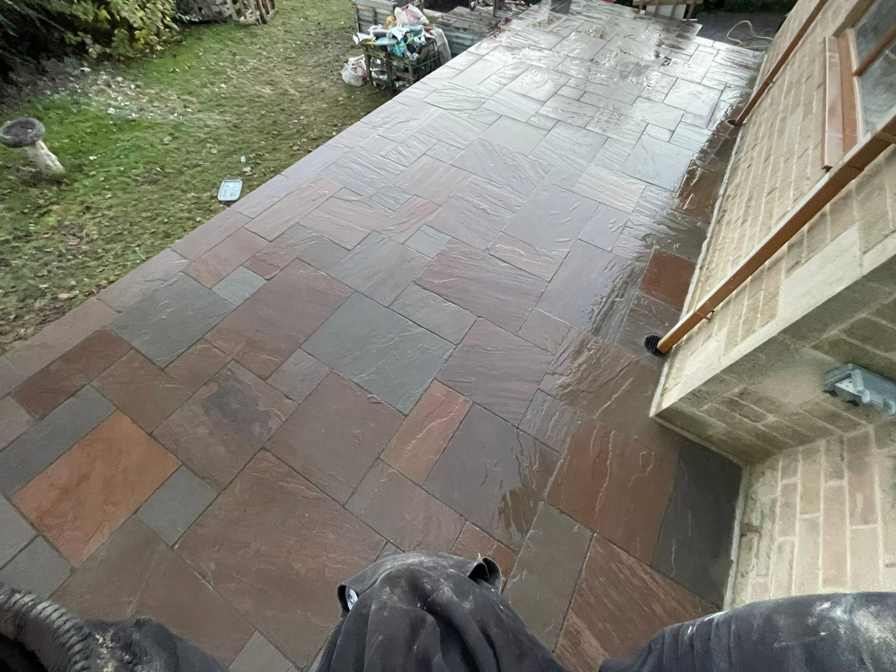
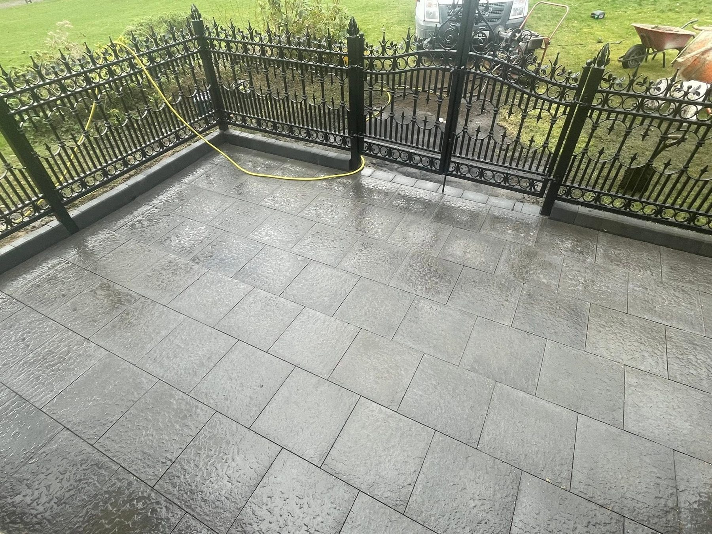
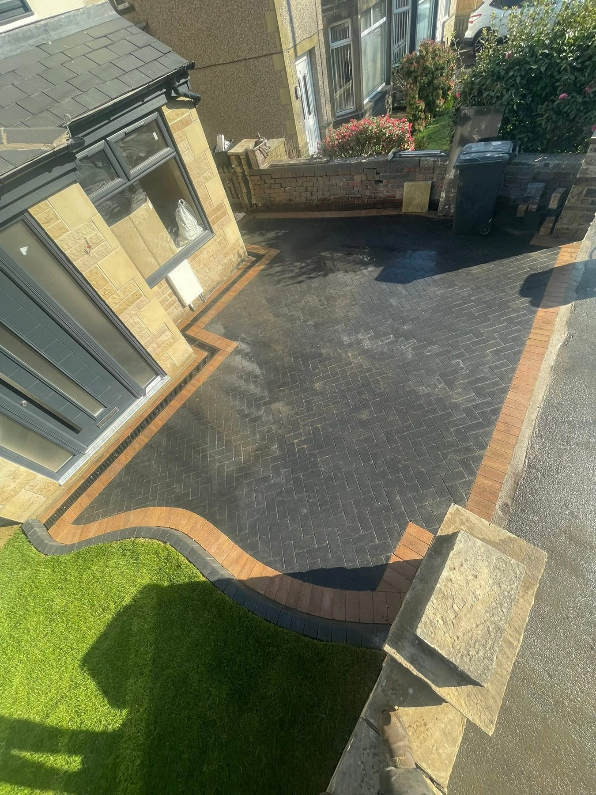
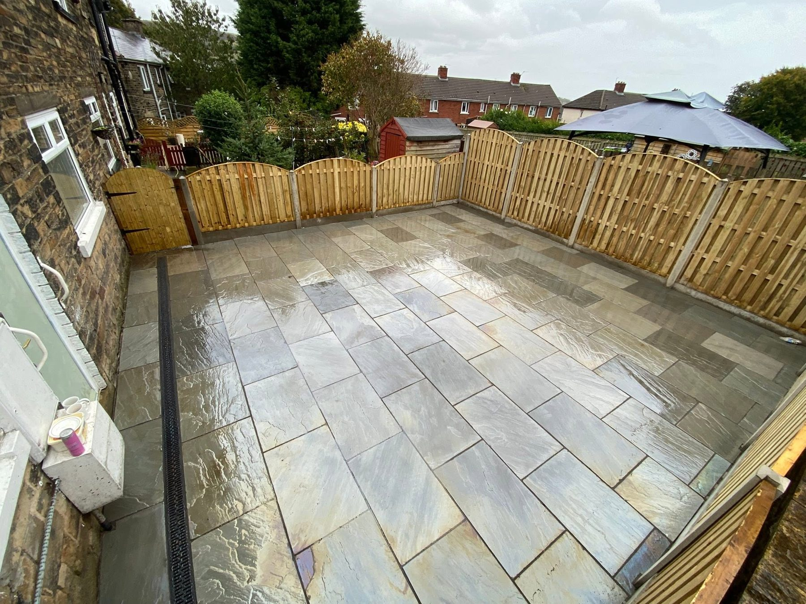

Patios & PavingOutdoor areas designed for everyday use
MD ADVANCED GROUNDWORKS · HALIFAX
Built from the ground up. Finished to stand out.
Patios, driveways, paving and outdoor transformations. See the work, then get in touch about your own space.
GroundworksDrivewaysPatios & pavingGarden transformations
DrivewaysBlock paving and practical entrances
GroundworksPreparation and structure for the finished space
Garden TransformationsLevels, steps and complete outdoor layouts
THE WORK SPEAKS
Outdoor spaces with a proper finish.
From crisp porcelain paving to block paved driveways and tiered garden areas, MD Advanced Groundworks’ supplied project photos show a range of finished surfaces and layouts.
Explore the projects →

PAVING & GROUNDWORKS
The details change how a space feels.
Clean borders, level changes and considered paving patterns bring structure to driveways and gardens. Browse the real project photos below to see the finishes.
Discuss your project →

RECENT PROJECTS
Real work. Different spaces.
A selection of photos supplied by MD Advanced Groundworks.




HALIFAX GROUNDWORKS
Ready for a space that works harder?
MD Advanced Groundworks is a Halifax-based construction business focused on groundwork and outdoor transformations. The supplied portfolio includes driveways, paths, paving, patios and garden steps.
01
Start with your space
Share photos and an outline of what you want changed.
02
Choose the finish
Discuss paving, layout and practical use of the area.
03
Request a quote
Call or send your project details on WhatsApp.
FREE QUOTE
Tell MD about your project.
Fill in the details and WhatsApp will open with your message ready to send. This is a quote request, not a confirmed booking.
MD ADVANCED GROUNDWORKS
Let's talk about your outdoor space.
Halifax, United Kingdom · Free quote